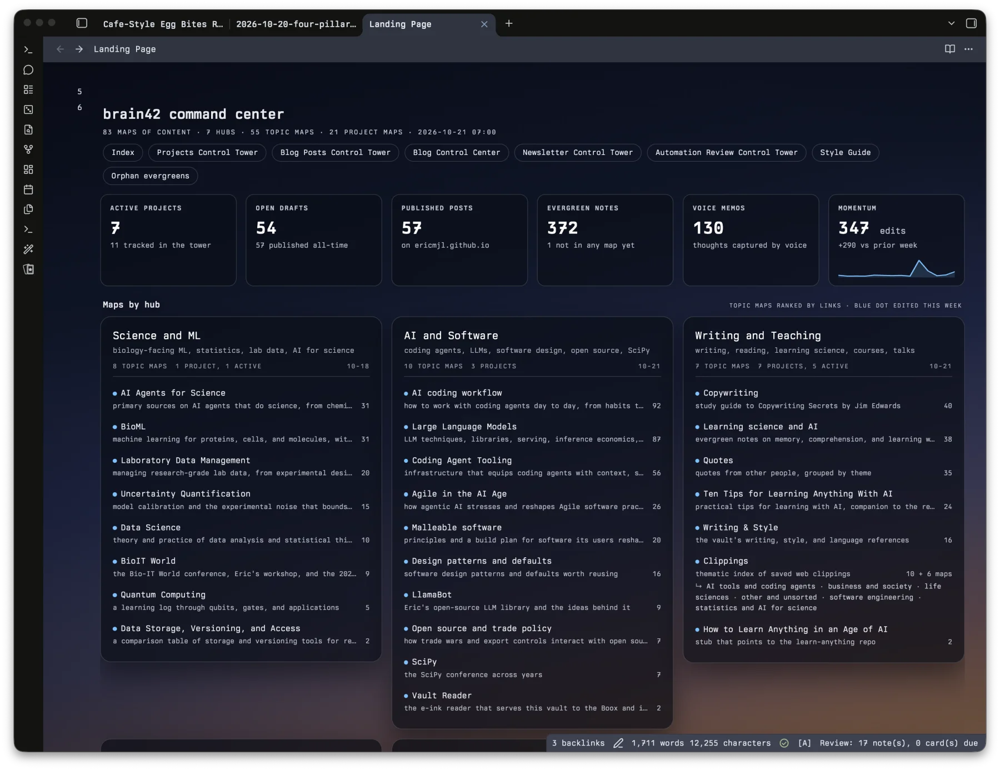
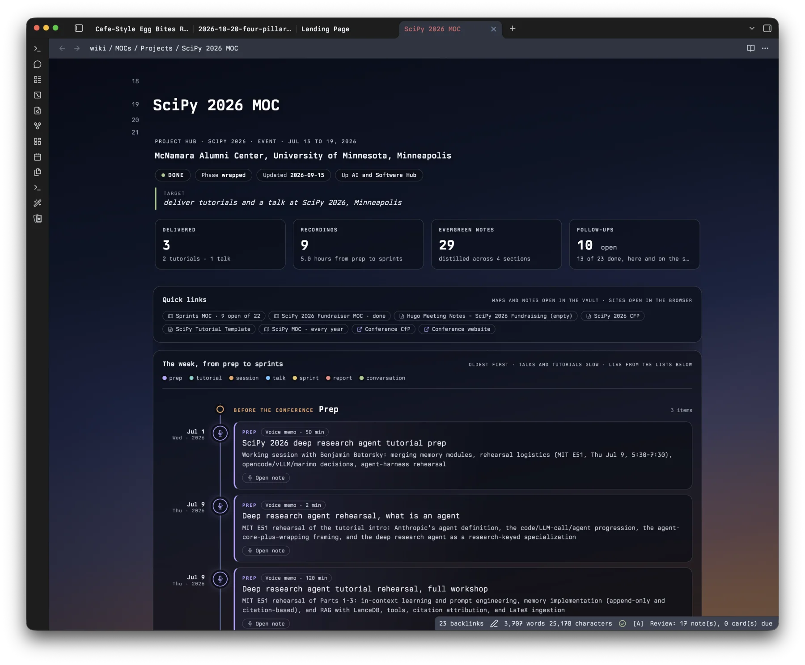

written by Eric J. Ma on 2026-10-22 | tags: obsidian knowledge management note taking evergreen note map of content agent coding agent learning markdown productivity workflow
In this post, I share the knowledge wiki pattern I've settled on in Obsidian: an index page, maps of content, a flat folder of raw sources, and evergreen notes, and nothing more. I walk through what each element does, how they link together for progressive reveal, and how I split the work with coding agents: they ingest sources, name files, and maintain links, while I keep control over themes and do the thinking that makes the notes worth having. If four moving parts can hold everything you're trying to learn, what are the rest of yours doing?
I've been asked this question a lot. How do I do knowledge management for learning new things, especially in an age of AI agents?
My system these days is centered on Obsidian. I've landed on a pattern I call an Obsidian Knowledge Wiki, modeled after Andrej Karpathy's LLM Wiki, and I'm sharing it here as inspiration for you, the reader, if you want to try to implement it.
Really, the wiki needs four elements, and three of them are just folders:
MOCs/.raw/.evergreen/.As a minimal example, your vault may look like this:
my-vault/
├── Index.md # the index or landing page
├── AGENTS.md # optional agent instructions, not an element
├── MOCs/
│ ├── Large Language Models MOC.md
│ ├── Malleable software MOC.md
│ ├── SciPy 2026 MOC.md
│ └── Uncertainty quantification MOC.md
├── raw/
│ ├── 2026-07-09 tutorial rehearsal recording.md
│ ├── Benchmarking uncertainty quantification for protein engineering.md
│ ├── Engines & kernels, not applications.md
│ ├── How I Manage My Entire Life with a Custom App I Built in Claude Code.md
│ └── The experimental uncertainty of public drug-binding data.md
└── evergreen/
├── A packing list is the smallest malleable knowledge graph.md
├── Every change in a malleable system is reversible.md
├── Experimental uncertainty sets upper bound on ML model performance.md
├── Malleable systems are local-first to last.md
├── Medical ML performance reports omit uncertainty and overstate model superiority.md
└── Retrieval feeds text into the context window, not embeddings.md
In my opinion, these are the only four elements that you need to organize knowledge for learning purposes. And so they're a core for you to build on and extend.
Additionally, it turns out that organizing knowledge for learning purposes also satisfies a lot of what's needed for managing projects. So in many ways, you can use the same elements to manage projects.
Now let's look at what each of these elements is.
Obviously, this is where you land. It's your go-to page whenever you want to find your way around, and it links out to the maps of content. So from the index, you can get to any topic in a click or two.
I'd encourage you to make your index beautiful, like the landing page I'm showing here. Your agents will do most of the navigating, so you probably won't look at it much. But on the days you do comb through things yourself, it's nice to land on something that looks good, and you'll absolutely enjoy working in it.

Later in this post, I'll share the prompt I use to build a page like this one and the agent skill it invokes, plus the Obsidian pieces you need, like the Dataview plugin.
Raw sources go into a single folder, raw/, which is top level and flat. It holds your original material, like articles, papers, transcripts, and voice notes, so you can always go back and check what a source actually says. Every raw source just goes in. You don't really need to apply any form of organization to it. It can be flat, with no subfolders, and as such no filing decisions to make. (That's totally OK, because the maps of content do the organizing for you.)
When ingesting raw sources into my knowledge wiki, this is the prompt I usually use, formatted as a prompt card:
A map of content is just a note that links to other notes on one topic. It does the job a folder would normally do, except a note can sit on as many maps as it needs to. So instead of agonizing over which folder something goes in, you add it to every map where it belongs. All the maps go into one flat folder, MOCs/.
But here's the part that is easy to miss. A map of content isn't just a filing system; it's a "thing". You give it a name the way you'd name a project, and once it's named, it lives in your head next to everything else you've named. If you name it the way you remember it, you'll be able to reference it easily when chatting with your agents, and you'll easily find it and open it when you want to go deep, with the raw sources and your notes linked right there.
A map's topic can be a theme, a knowledge area, or a project, and you can mix and match them however you like. There's no need to pick just one.
Theme maps follow one idea across fields. My malleable software map is about software that its users reshape as they go, and I group its notes into principles and how to build a malleable system:
# Malleable software MOC ## Principles - [[Malleable systems are local-first to last]] - evergreen note - [[Every change in a malleable system is reversible]] - evergreen note - [[Engines & kernels, not applications]] - raw source ## Building one - [[A packing list is the smallest malleable knowledge graph]] - evergreen note - [[How I Manage My Entire Life with a Custom App I Built in Claude Code]] - raw source
Knowledge-area maps stay inside one field with its own literature. For my uncertainty quantification map, I split the field into uncertainty in models and uncertainty in data, then list the papers I've read alongside my evergreen notes on each side:
# Uncertainty quantification MOC ## Uncertainty in models - [[Benchmarking uncertainty quantification for protein engineering]] - raw source - [[Medical ML performance reports omit uncertainty and overstate model superiority]] - evergreen note ## Uncertainty in data - [[The experimental uncertainty of public drug-binding data]] - raw source - [[Experimental uncertainty sets upper bound on ML model performance]] - evergreen note
Project maps are the ones with a finish line. On my SciPy 2026 map, I kept the dates, my tutorial prep, and the to-dos for the conference:
# SciPy 2026 MOC ## Key dates - Tutorials on July 13 and 14, talks on July 15 to 17 ## Deep research agent tutorial - [[2026-07-09 tutorial rehearsal recording]] - raw source - [[Retrieval feeds text into the context window, not embeddings]] - evergreen note ## Next actions - [ ] Turn the conference report into a blog post ## Related - [[Large Language Models MOC]] - knowledge-area map
That retrieval note also sits on my large language models map, a knowledge-area map, so I can still find it long after the conference is over.
All MOCs can be made to look beautiful too! Here is one example from my vault, the SciPy 2026 MOC.

Evergreen notes go into a flat folder called evergreen/, and each one is a synthesis of ideas from the raw sources. These notes capture what you actually understand, and they're the part you reuse and build on. I use Andy Matuschak's definition of evergreen notes, where each note is a claim, stands the test of time, and synthesizes information. Since every evergreen note is built from raw sources, it links back to the sources it draws on.
My evergreen notes come about in two ways. Most of the time, a note starts from something I've come to understand from the raw sources, and an agent helps me write it up. Other times, I ask an agent to go through the sources and surprise me with something I didn't know, so the idea comes from the agent instead of me. I'll walk through both later in this post.
Links turn the index and three flat folders into a wiki. They connect like this:
Here's what each arrow means:
With these links, we're applying the principle of progressive reveal. You start at the index, which shows you the maps. A map shows you the evergreen notes and sources on its topic. An evergreen note gives you the claim, and its links to raw sources take you down to the original evidence. At each level, you only see as much detail as you need, and the next level is one click away.
Let's follow a single source from the moment I find it to the moment it's part of the wiki.
When I find something worth keeping, I give the agent the prompt from the card above. In practice, that sounds like "Ingest this URL into my vault please." I have an agent skill for managing my knowledge base, and it does most of the work.
The agent starts by converting whatever I've handed it to Markdown so it's easy to search (unless it's an image, of course), and then it files the result in the flat raw/ folder.
It also names the file so I don't have to. I really don't want to think too hard about naming.
Once the file has a name, the agent links the new source into each map of content where it belongs. I go into that linking work later, in the sections on keeping the maps organized and the division of labor.
There are two things I do with evergreen notes.
The first is for when I think of something that's probably worth an evergreen note. I tell the agent to write it down and expand upon it, based on my reading of the raw sources. The idea comes from me, while the agent does the drafting and the expansion. I also ask it to push back on me if my raw sources don't support the idea, and to propose changes so the note is properly backed by them. The agent also links the note to the raw sources it came from and to any other evergreen notes it builds on.
Here's the prompt I use when the idea is mine:
Other times, I ask the agent to surprise me: "Go tell me something I didn't know. Go make something that wasn't obvious from the reading." The agent then does the reading across the sources and tells me stuff.
And here's the one I use when I want the agent to surprise me:
Obviously, we need to strike a balance here. If we're getting agents to create all of our evergreen notes, then we're not learning anything. But if we can bring in some element of surprise, that's worthwhile.
My agents do most of the organizing in this wiki on purpose. It follows Andrej Karpathy's LLM Wiki idea, where the LLM writes and maintains the wiki while you take charge of sourcing, exploring, and asking the right questions. Karpathy describes the grunt work of a knowledge base as the summarizing, cross-referencing, filing, and bookkeeping, and that's the work I hand to my agents. Curating every link by hand would be far too much for me, and I don't want to be stuck doing it.
My own part in keeping the maps organized is small. I decide the themes, knowledge areas, or projects the maps are built around, and the agents handle everything else.
I ask the agents to stick to the big-picture structure and leave it intact. raw/ stays flat, MOCs/ stays flat, evergreen/ stays flat, and the maps of content do most of the organizational heavy lifting. Because the folders stay flat, when a set of notes needs to be grouped together, the agent links them into a map and leaves the files exactly where they are.
Here's the instruction I'd put in the AGENTS.md at the root of my vault:
Within that structure, I want each agent to touch as little as it can. An agent ingesting one raw source should add it to the maps where it belongs and leave the rest of the vault alone. The fewer changes an agent makes, the easier it is for me to follow what happened. It's the same reason I kept the wiki to four elements.
I have to balance that against the fact that a wiki only works when things are linked. So my rule is that if there's a good, plausible argument for linking two things, the agent should make the link. That means putting a raw source or an evergreen note on every map where it plausibly belongs, linking an evergreen note to the raw sources it quotes, and linking evergreen notes to one another when one builds on another. Those links are what make the progressive reveal work.
Agents also have to keep the direction of the links straight. Evergreen notes quote and link to raw sources, and raw sources never cite evergreen notes, because an evergreen note is a synthesis built on top of its sources. That one-way rule is part of keeping the structure intact, and it's easy for an agent to follow once it's written down in the ingestion skill or in AGENTS.md.
Here's the prompt I'd use to start a new map:
The agent handles:
raw/,The raw-source quotes only go one way, from the evergreen notes out.
I handle:
This part is optional, but it could be super nice :). The landing page does the job of the index I showed earlier, just nicer to look at, so we're still at four elements, and your wiki works fine without it. But if you'd like to land somewhere pretty when you open your vault, you can have your agent build one for you.
Here's the prompt I use:
I can get away with one line because I wrote all the steps into my obsidian-landing-page skill. First, the agent looks through the vault without changing anything. Then it writes a brand new note for the landing page, with a few stat cards, one card per map of content, and rows of recently added notes. It never edits your existing notes, not even the index. It gets every number by counting links and reading file dates, so the page works in any vault set up like this one.
On the Obsidian side, you'll need the Dataview community plugin, with Enable JavaScript queries turned on in its settings, because the whole page is one DataviewJS block. You'll also need to turn on the CSS snippet the agent writes, which you do under Settings, Appearance, CSS snippets. The snippet only styles the landing page, so the rest of your notes look just like they did before.
If you know the rules, you can bend the rules. The four elements and flat folders I've described so far are the base structure, and I'd start there. Once it works for you and you understand why each rule is there, you may find places where you want something a little different, and that's OK.
My own vault bends the rules in two ways. First, I split my maps of content across Hubs/, Topics/, and Projects/ subfolders, with the index linking to the hubs and each hub linking to its maps. When a project is finished, its map moves to an archive folder. Second, when a map grows past about 60 links, it gets split into smaller sub-maps, and the parent map lists them.
I make the call on every bend, which is why the "Keep the structure intact" card ends with "If you think the structure needs to change, ask me first." When I do bend a rule, I update my AGENTS.md so every agent follows the new structure.
I kept the system to four elements on purpose. One of the key tenets of how I operate is the simpler, the better, and the fewer the moving parts, the better. Every extra folder, tag scheme, or note type is one more thing to keep track of.
With only four elements, I can hold the whole system in my head, so my energy goes into learning, which is what the system is there for in the first place.
If you're setting up a knowledge wiki of your own, I'd start with the four elements and let your agents do the filing and linking, so you can spend your time on the thinking.
If you've landed on a setup that works for you, I'd love to hear about it! And if you're curious about how to use the vault while you're learning something new, that's going to be part of the content at the Learn Anything retreat!
@article{
ericmjl-2026-four-pillar-obsidian-knowledge-wiki,
author = {Eric J. Ma},
title = {Four pillars are all my Obsidian knowledge wiki needs},
year = {2026},
month = {10},
day = {22},
howpublished = {\url{https://ericmjl.github.io}},
journal = {Eric J. Ma's Blog},
url = {https://ericmjl.github.io/blog/2026/10/22/four-pillar-obsidian-knowledge-wiki},
}
I send out a newsletter with tips and tools for data scientists. Come check it out at Substack.
# TODO(eric): learn how to learn anything. feb 2027.
If you would like to sponsor the coffee that goes into making my posts, please consider GitHub Sponsors!